己未日
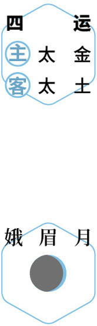
 补冬
补冬初冬｜节气｜ 立冬 ｜时间｜ 十一月七日至十一月廿二日
今年立冬需特别注意的健康问题：发热、咳嗽、鼻炎、皮肤病
原料：白果、墨鱼干、肥肉或鸡肉、枸杞、陈皮、生姜。
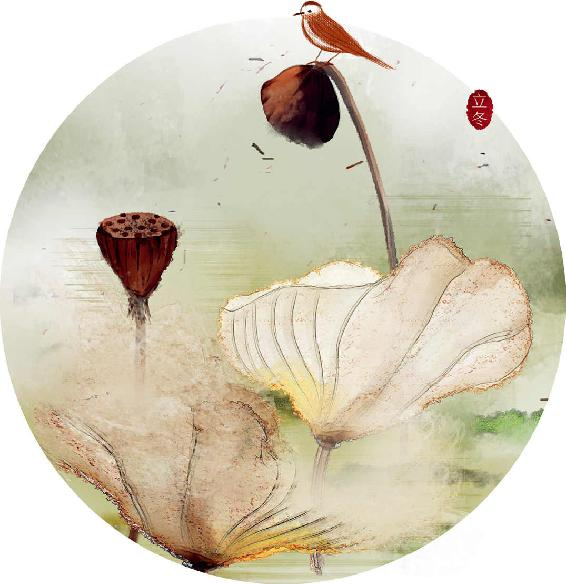
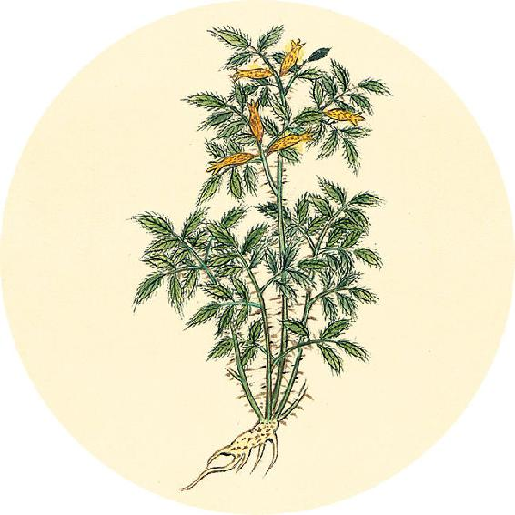
节气食方（一）
白果墨鱼汤
原料（1人量）：白果7粒、墨鱼干1只、肥肉或鸡肉1两、枸杞20粒、陈皮1个、生姜3片。
做法：
1. 墨鱼干不要拆骨，连骨一起下锅。
2. 冷水下锅，煮开后炖1小时。
功效：滋肝补肾，养心阴。
【释义】十一月十二月，冰封大地，地气密合，这时候的人气在肾。

补冬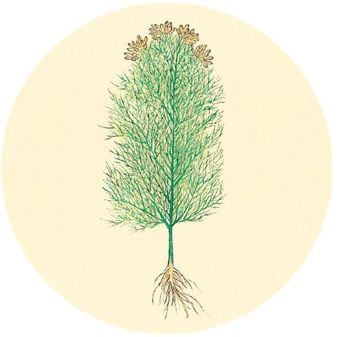
健康提示
从今天开始进入辛丑岁的第五运（终运），
历时73天（11月8日13:45—1月20日15:00）
主运——少水；客运——少金。
每一年的最后一个“运”——第五运（终运）的主运都是“水”。水在人体为肾，在方位为北，在气候为寒，在四季为冬。这个阶段是冬天，来自北方的寒潮应时而至，使天气从第四运的凉爽骤降到寒冷。
根据8月11日的自测结果，在选项打钩
□ 夏季体重和腰围均增加
对策：莲杞顺时粥配方不变。
□ 其他人
对策：莲杞顺时粥可不放荷叶。
故春刺散俞（shù，腧穴）及与（“与”同“于”）分理，血出而止。甚者传气，间者环也（据《黄帝内经太素》，“也”为“已”）。
——黄帝内经·素问·诊要经终论
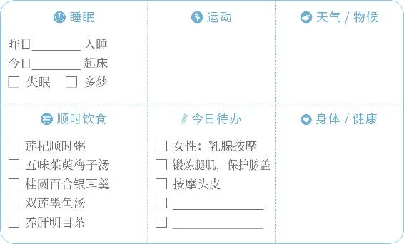
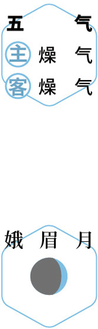
静养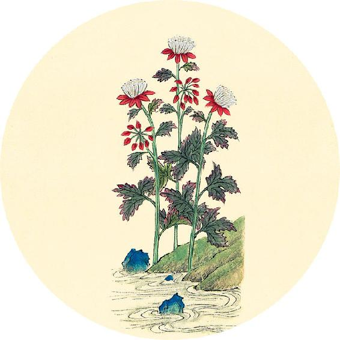
节气食方（二）
凉拌茴香菜
原料：新鲜茴香菜、豆瓣酱、植物油。
做法：
1. 新鲜茴香菜取嫩茎叶切碎，装盘。
2. 舀一小勺豆瓣酱放在盘里的茴香菜上。
3. 锅内放少许油加热，将热油倒在盘里的豆瓣酱上，迅速搅拌均匀。
功效：补肾阳、暖脾胃、散风寒、防流感。
【释义】所以春天的刺法，应刺经脉散俞穴，刺到肌肉分理，到出血为止。病较重的，针刺后，待气得流通，病会渐渐痊愈；病轻的，病旋即就好了。
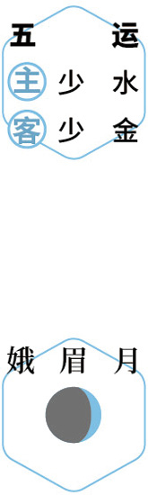
静养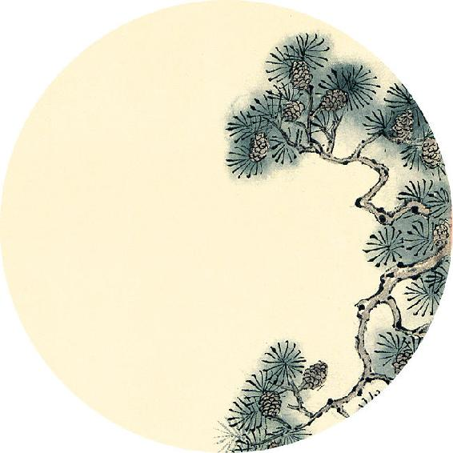
二十四节气茶养生
今年立冬节气品茶推荐：红雪茶。
胃不好、不敢多饮茶的人，可以喝红雪茶，它是性平的，暖胃又不上火，茶味苦香而回甘，能健脾胃。
红香雪茶
原料：小茴香9克、甘草6克、红雪茶适量。
做法：
1. 小茴香用小火炒出香味，装瓶备用。
2. 每次取9克，和其他原料一起沸水冲泡。
功效：适合冬季胃寒、宫寒、小腹冷痛、手脚冰凉的人饮用。
夏刺络俞（shù，腧穴），见血而止。尽气闭环，痛病必下。
——黄帝内经·素问·诊要经终论
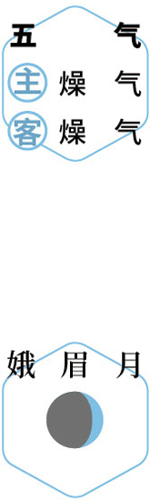
品茶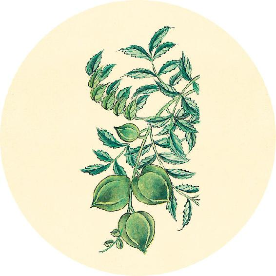
一候反思
是否有以下情况：
最近感冒过 □ 是 □ 否
最近咳嗽过 □ 是 □ 否
最近受过寒 □ 是 □ 否
平时虚不受补 □ 是 □ 否
任何一个答“是”，提前两三天喝“开路汤”（配方见11月19日）
接下来的六之气阶段（从小雪开始）要喝参芪补心养阳汤，配方中有黄芪，感冒急性期不能喝。如果感冒已经痊愈，担心受的寒没有清除干净，可以先喝“开路汤”散散表邪。
【释义】夏天的刺法，应刺孙络的俞穴，到出血为止。使邪气尽去，扪闭针孔，穴孔闭合，痛病就消除了。
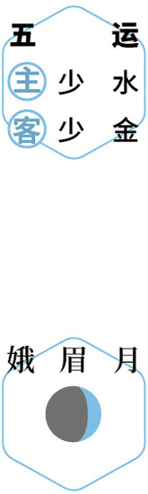
养血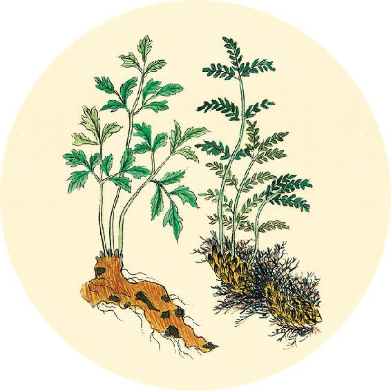
健康提示
立冬节气的养生功课：补肾阳、滋肾阴。
今年立冬特殊的养生要点——
注意预防受风寒引发呼吸道疾病和皮肤病。同时要抓紧时节补肾，准备好度过今年这个易生病的冬季。
保养重点：胃、肾。
容易出现的问题：发热、咳嗽、鼻炎、皮肤病。
秋刺皮肤循理，上下同法，神变而止。
——黄帝内经·素问·诊要经终论
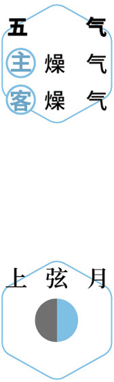
进补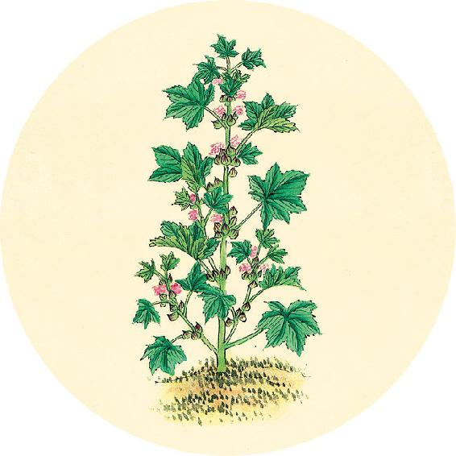
健康提示
从立冬开始，进入冬天的第一个月，初冬。
养生关键词：“补肾”。
上半月重点：阴阳双补。
下半月重点：封固、闭藏。
今年初冬这个月，夏季祛湿功课没有做好的人，容易生病。已经坚持喝9个月莲杞顺时粥的人，到小雪节气时可以换配方，去掉荷叶，加栗子和核桃。
【释义】秋天的刺法，应刺皮肤，先用手指循按肌肉的纹理，宣散气血，进针的深浅，看病人的神色，如果神色变了，就要止针。
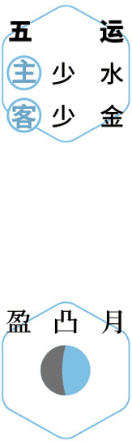
暖肾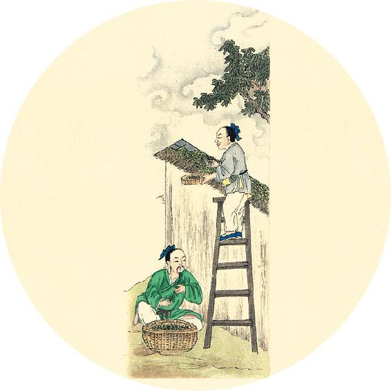
健康提示
糖尿病病人的饮食保健
糖尿病病人往往脾肾双虚，宜多吃健脾补肾的食物：枸杞、莲子、百合、茯苓、麦麸等，都对糖尿病病人有很好的调理作用。
长期患有糖尿病的人，秋冬季要多吃银耳来补虚，阴虚口渴的人加百合，血虚睡眠不好的人加桂圆，视力减退的加枸杞。
若血糖升高不降，首先遵医嘱治疗，饮食上可以用麦麸来代替主食。
冬刺俞（shù，腧穴）窍于分理，甚者直下，间者散下。
——黄帝内经·素问·诊要经终论
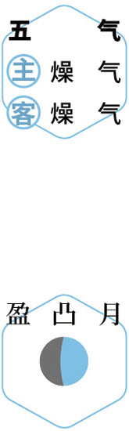
问安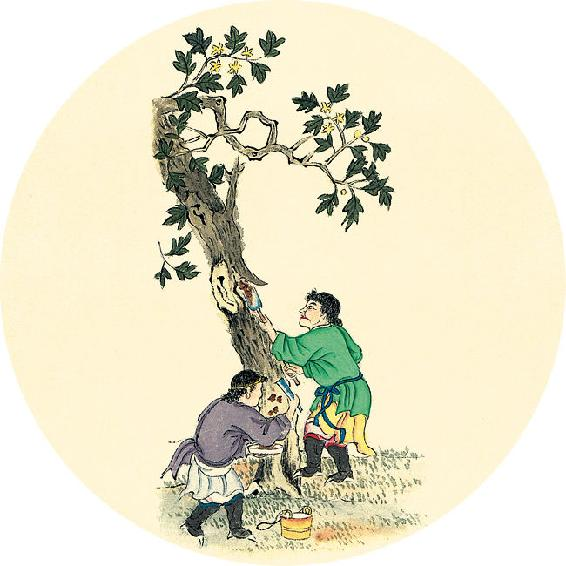
健康提示
血糖升高时的临时代餐主食——麦麸
原料：小麦的麸皮。
做法：加水煮，煮到浓稠熟透，代替主食食用，连吃三天到一周。
平时保健也可以在煮杂粮粥时放一把麦麸一起煮。
麦麸的功效：降血糖，助眠，调理产后虚汗。
千古名方甘麦大枣汤，用的就是以麦麸为主的浮小麦，搭配甘草和大枣，调理多种疾病功效神奇。
【释义】冬天的刺法，应该深取腧穴之孔窍，到达肌肉分理之间。病重者深刺直入，病轻的则在上下左右选择合适位置针刺。
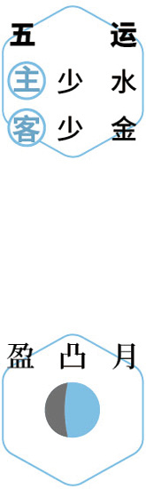
食麦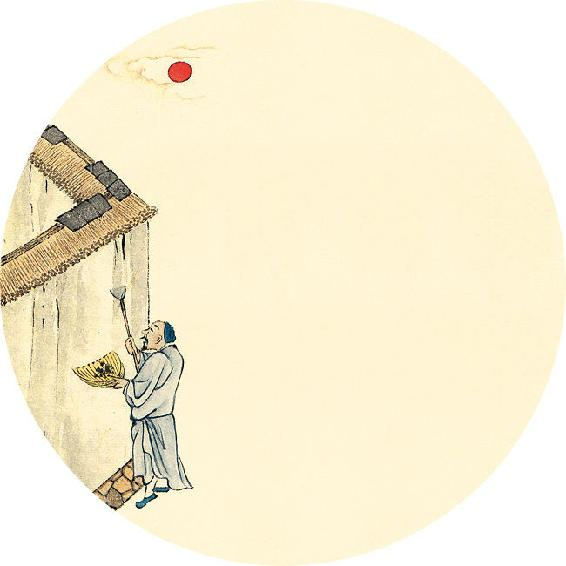
二候反思
自测是否具备慢阻肺的主要致病因素：
长期吸烟或被动吸入二手烟 □ 是 □ 否
经常接触污染空气（雾霾、汽车尾气） □ 是 □ 否
家居室内污染（粉尘、油烟） □ 是 □ 否
在胎儿时期母亲长期接触污染空气 □ 是 □ 否
以上任意一个答“是”，要注意预防慢阻肺，远离污染源，常吃鱼腥草清肺。
春夏秋冬，各有所刺，法其所在。
——黄帝内经·素问·诊要经终论
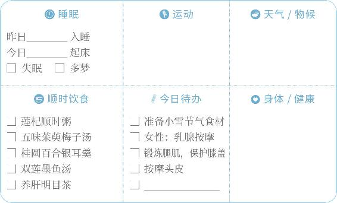
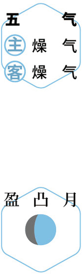
查病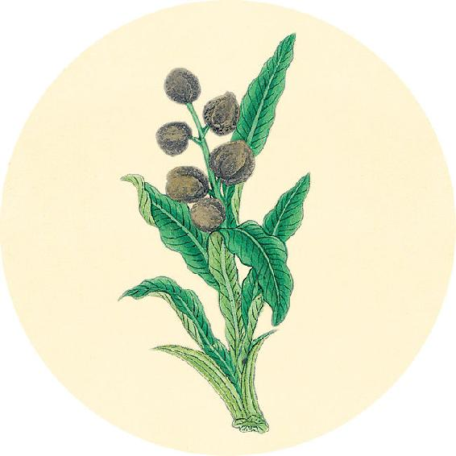
健康提示
今天是世界慢阻肺日。慢阻肺是“慢性阻塞性肺疾病”的简称。在中国，有1亿人患有慢阻肺，它也是位居我国第三位死因的疾病。
“慢阻肺”，是慢性支气管炎和肺气肿的总称，症状是长期咳嗽、咳痰和气喘。
慢阻肺发展缓慢，年轻时并不明显，到了四五十岁才出现明显症状。慢阻肺无法治愈，一旦恶化甚至有生命危险，所以要从年轻时开始预防。
【释义】春夏秋冬，各有所宜的刺法，须根据当季人体气之所在（正月二月在肝，三四月在脾，五六月在头，七八月在肺，九十月在心，十一月十二月在肾），而确定刺的部位。
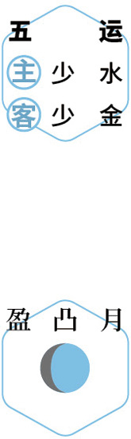
问安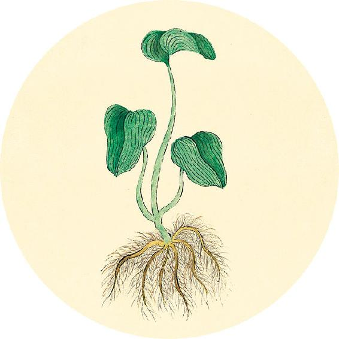
健康提示
慢阻肺的主要表现为“慢性支气管炎”和“肺气肿”。
慢性支气管炎是支气管反复发炎造成的，会连续几个月咳痰。有的人会腿肿、全身肥胖，甚至心力衰竭。
肺气肿是肺部吸入了有害微粒（吸烟、空气污染），对肺泡造成了永久性损伤，使肺泡失去弹性，不能正常地回缩。
春刺夏分，脉乱气微，入淫骨髓，病不能愈，令人不嗜食，又且少气。
——黄帝内经·素问·诊要经终论
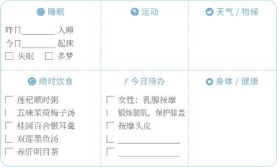
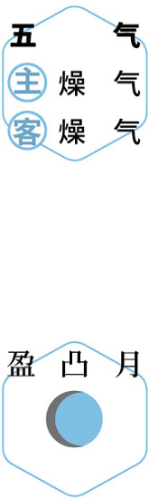
清肺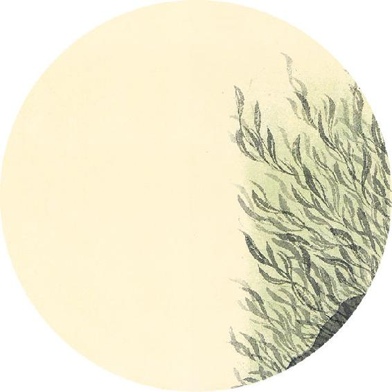
健康提示
“开路汤”（喝补心养阳汤之前的预备食方）
原料：葱白连须2根（大葱）或5根（小葱）、带皮生姜3片、白萝卜1个。
做法：
1. 将萝卜的皮削下来留用，萝卜肉可以另做他用。
2. 将萝卜皮和葱白连须、生姜一起下锅大火煮几分钟。
3. 滤出汤汁饮用。
功效：散风寒表邪、通鼻塞。
【释义】春天误刺了夏天的部位，就会出现脉乱气弱的情况，邪气会侵入骨髓之中，病就不能痊愈，使人不想吃饭，而且气虚不足。
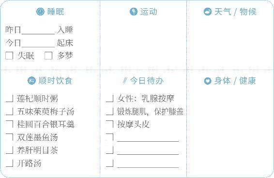
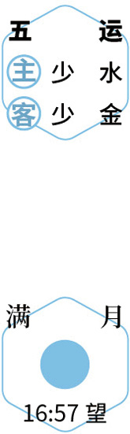
望月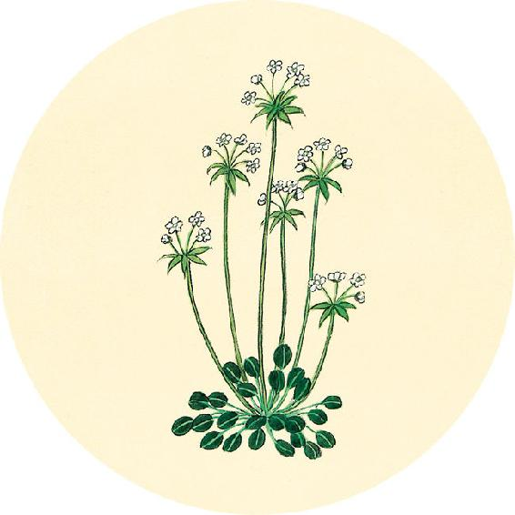
食材准备
后天进入小雪节气。
1. 补肾养藏汤+莲杞顺时粥（小雪到小寒配方）
原料：栗子、核桃、枸杞子、川陈皮、莲子、茯苓、粥米、植物油。
2. 银耳羹
原料：银耳、桂圆、百合、枸杞等。
3. 冬季补品
原料：墨鱼、山茱萸。
4. 辛丑岁六气保健方：参芪补心养阳汤（从小雪吃到明年大寒前日，做法见11月30日）
5. 鱼腥草（雾霾地区）
春刺秋分，筋挛逆气，环为咳嗽，病不愈，令人时惊，又且哭。
——黄帝内经·素问·诊要经终论
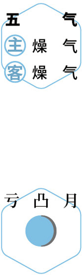
散寒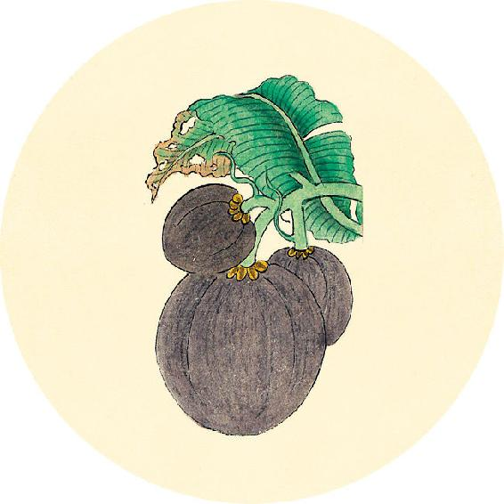
节气总结备
银耳羹________次
白果墨鱼汤________次
凉拌茴香菜________次
五味茱萸梅子汤________次
莲杞顺时粥________次
开路汤________次
身体哪些方面有改善_________________________
【释义】春天误刺了秋天的部位，就会发为筋挛气逆之病，邪气因误刺而环周于肺，则又发为咳嗽，疾病就不能痊愈，使人有时惊惧，有时欲哭。
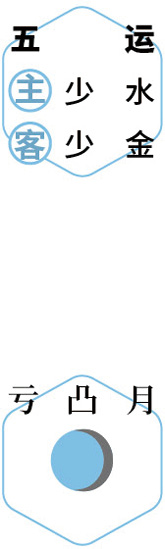
问安